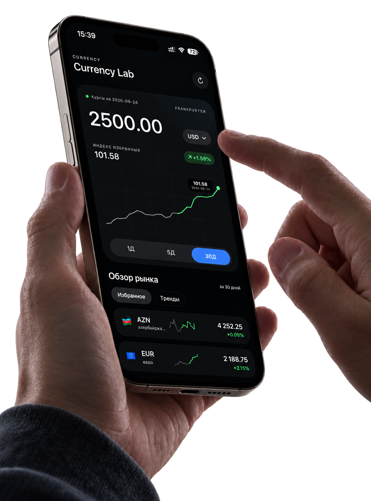
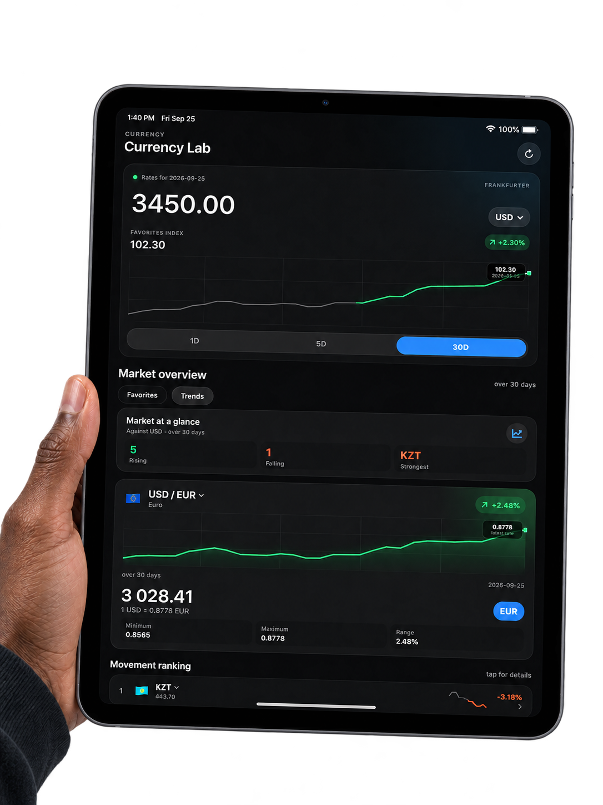

Calculate as you convert.
Enter an amount, choose your base currency, and use the built-in calculator without leaving the main screen.
CURRENCY LAB FOR IPHONE & IPAD
The rates you need, the context behind them, and a calculator right where you need it. One focused place to make sense of money across borders.
Free to download · No account required · English & Russian

MADE FOR EVERYDAY DECISIONS
Convert quickly, see what changed, and keep the currencies that matter close.
Enter an amount, choose your base currency, and use the built-in calculator without leaving the main screen.
Explore 1, 5, and 30-day charts, compare market movements, and look beyond a single exchange-rate quote.
Choose and reorder favorite currencies so the rates you check most are always easy to find.
MARKET CONTEXT
Charts and a clear market overview make it easier to follow how currencies have moved over the selected period.
Reference exchange rates and historical series are supplied by Frankfurter. Rates are informational and may differ from those offered by banks, card networks, or payment providers.

HERE TO HELP
Answers to the essentials. If something still is not right, reach the developer directly.
Tap the main amount to edit it or use the calculator. Tap a currency code to choose a different currency.
Tap the refresh button at the top of the app. Currency Lab shows the latest available reference rates and their date; new rates may not be published every day.
Rates and historical series come from the Frankfurter API. They are reference data, not a guaranteed rate for a transfer or card purchase.
No. You can use the app without creating an account. Your currency preferences stay on your device. See our Privacy Policy for details.
A DIRECT LINE
Bug reports, feedback, and support requests are welcome.